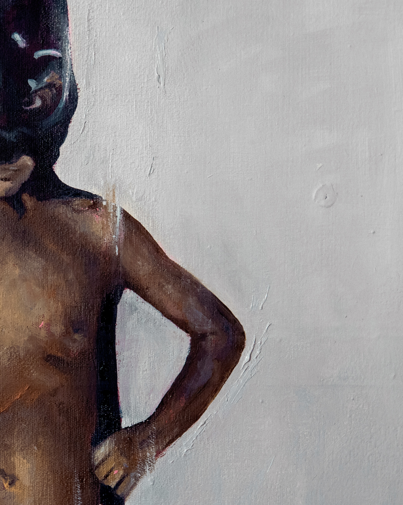
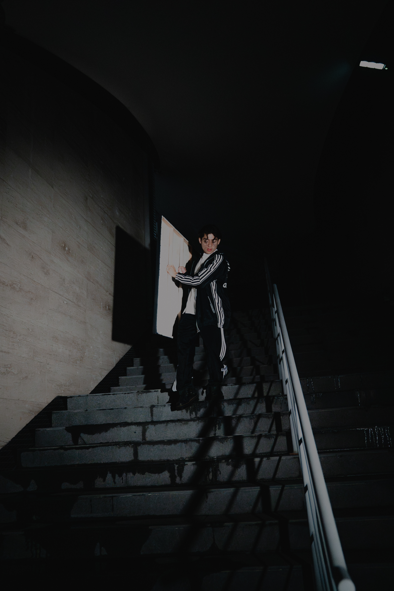
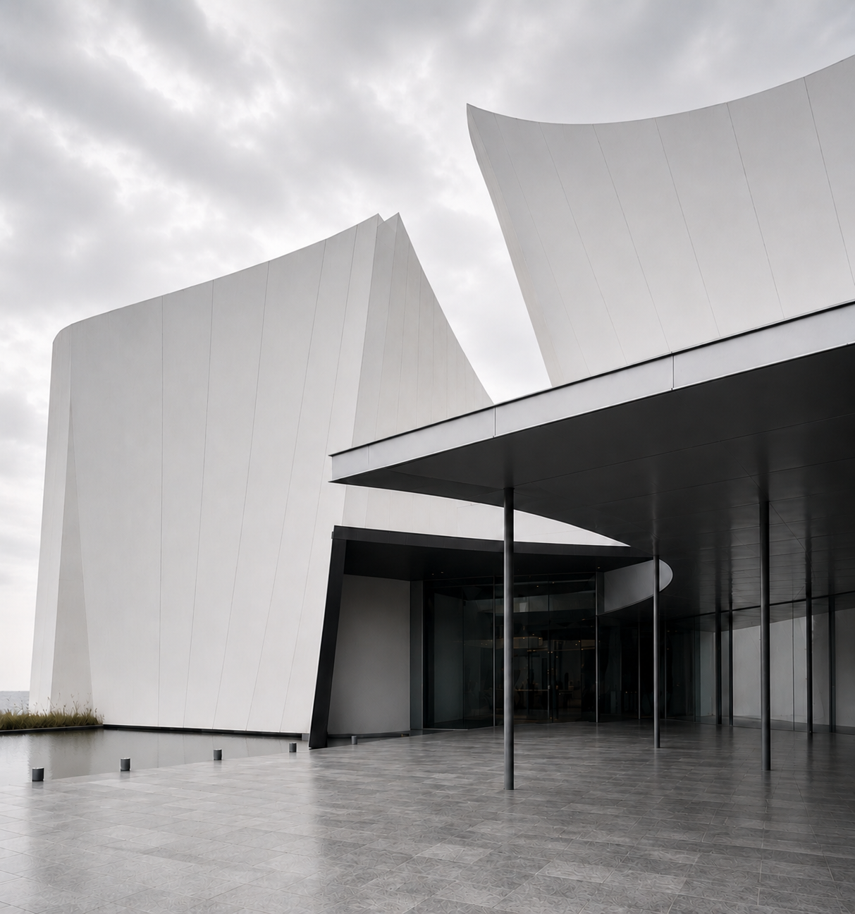
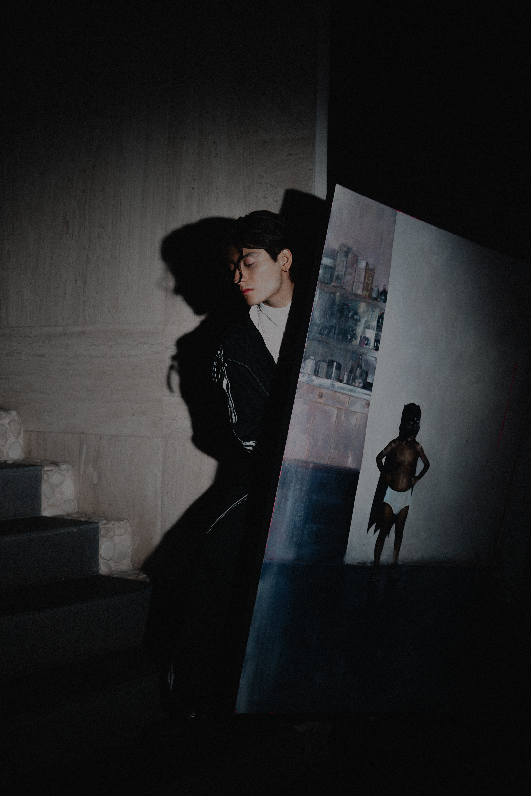
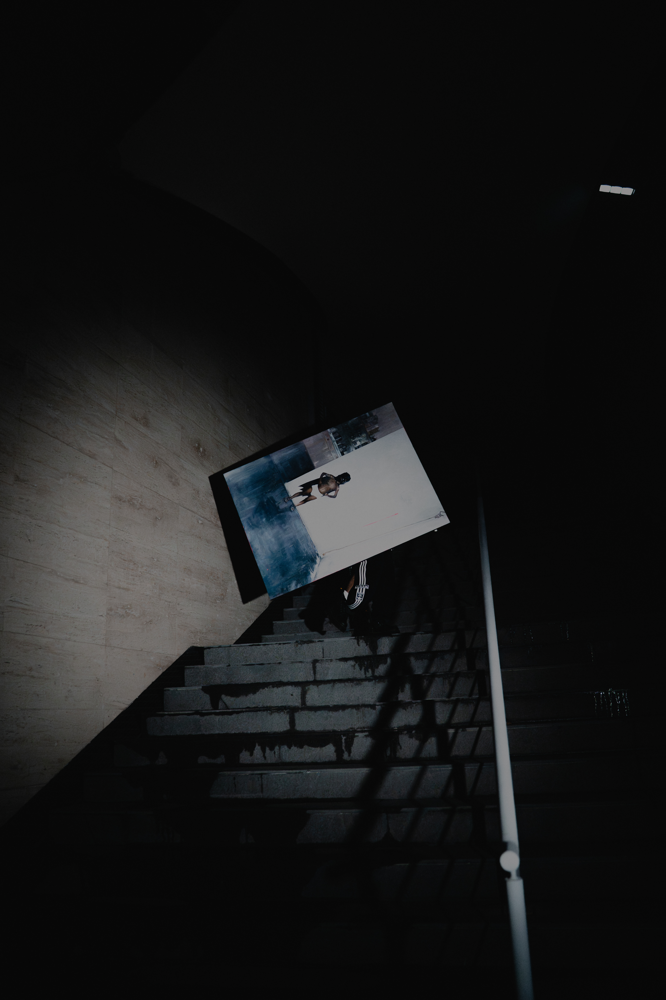
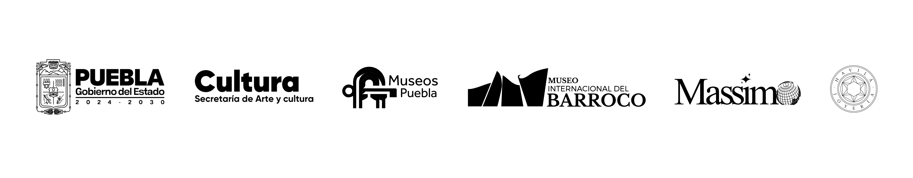

Pintura dump.
Una tendencia del arte contemporáneo
Museo Internacional del Barroco
Cuenta regresiva hacia la inauguración de Pintura dump.

Formar parte¿Qué es pintura dump?
El exceso digital no es basura, es una tendencia del arte en potencia
La pintura dump es una tendencia de la pintura contemporánea que surge de la relación entre la práctica pictórica y las formas actuales de producción y circulación de imágenes.
Parte de un fenómeno visible: la acumulación constante de registros fotográficos que conforman un archivo activo, un vertedero visual, desde el cual el pintor selecciona fotos y las traslada del lenguaje fotográfico al lenguaje pictórico.
Las fotos recuperadas no se copian ni se corrigen. Se pintan conservando sus condiciones de origen: encuadres fragmentados, desenfoques, sobreexposiciones y aberraciones cromáticas, rasgos propios de la fotografía móvil y de su circulación en entornos digitales.
A partir de su investigación, Jarett Aramis identifica esta manera de pintar, la nombra y delimita sus características como una tendencia de la pintura contemporánea.

Formar parteJarett Aramis
El artista que identifica una nueva manera de pintar
Jarett Aramis es un artista plástico y gestor cultural cuya práctica se desarrolla en la pintura y el dibujo, con una línea de investigación centrada en los procesos mediante los cuales la fotografía móvil es trasladada al lenguaje pictórico. Su trabajo articula producción artística, reflexión teórica y gestión cultural, consolidando una trayectoria activa en museos, galerías e instituciones culturales.
De forma paralela, ha desarrollado una labor constante en el ámbito formativo y pedagógico, impartiendo talleres y activando proyectos culturales que amplían el alcance de su práctica.
Su trabajo no solo produce obra, sino que incide en el medio artístico actual, participando activamente en su construcción y en la forma en que hoy se piensa y se produce la pintura.

Museo Internacional del Barroco
El espacio que abre el primer umbral al público de Pintura dump.
A finales de 2026, el Museo Internacional del Barroco en Puebla —recinto que ha albergado obras de Picasso y Goya— presentará Pintura dump. Una tendencia del arte contemporáneo, exposición pictórica de Jarett Aramis, el pintor más joven en ocupar este espacio con 24 años de edad.
La muestra reunirá 48 piezas: 20 ya concluidas y 28 en producción. El proyecto se complementará con documentación audiovisual y contenidos didácticos.
Más que cerrar el fenómeno, esta primera sede lo abre al público.
- Inauguración
- Horario
- 6:33 p.m.
- Cierre
Del vertedero a la trascendencia.
La trayectoria que antecede el fenómeno.
Antes de Pintura dump, la práctica de Jarett Aramis ya articulaba una relación singular entre tradición pictórica, iconografía histórica e imaginarios contemporáneos.
Esta selección reúne obras que permiten leer parte de ese recorrido y entender la evolución de una investigación que hoy desemboca en una nueva tendencia dentro de la pintura contemporánea.
Archivo vivo del fenómeno
Aquí se reúne la documentación de Pintura dump: procesos pictóricos, publicidad, activaciones, ruedas de prensa, entrevistas y registros audiovisuales de sus distintas apariciones.
Todo lo que rodea al fenómeno también dejará huella.
- 01 Proceso pictórico
- 02 Activaciones
- 03 Entrevistas
- 04 Publicidad

Formar parte
Forma parte del fenómeno
Pintura dump abre conversación con instituciones, prensa, aliados culturales, marcas, coleccionistas y personas interesadas en acompañar el desarrollo público de la exposición. Para colaboraciones, cobertura, catálogo, prensa o contacto institucional:
contacto@pinturadump.com Abrir conversación.- Prensa
- Instituciones
- Aliados
- Marcas
- Catálogo
